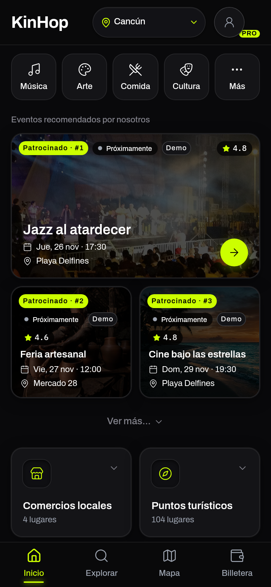
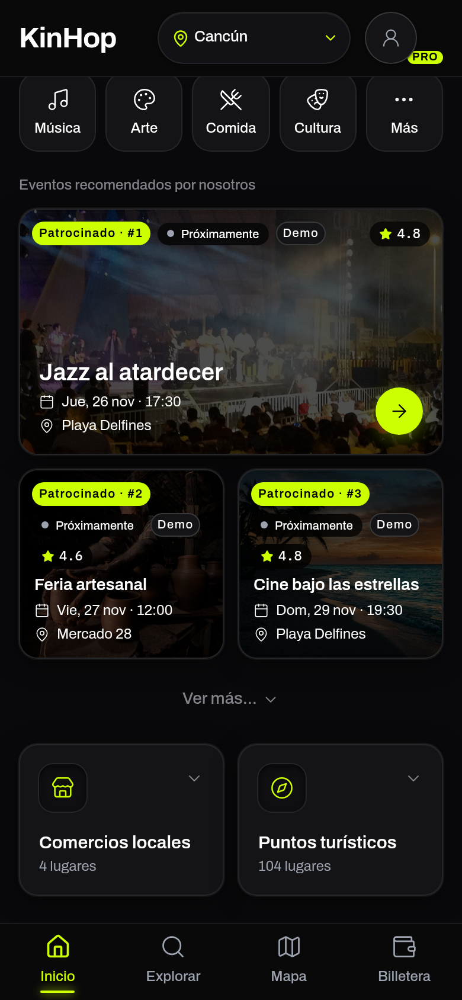
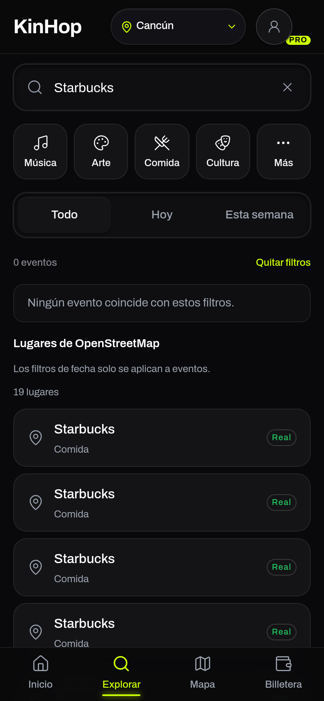
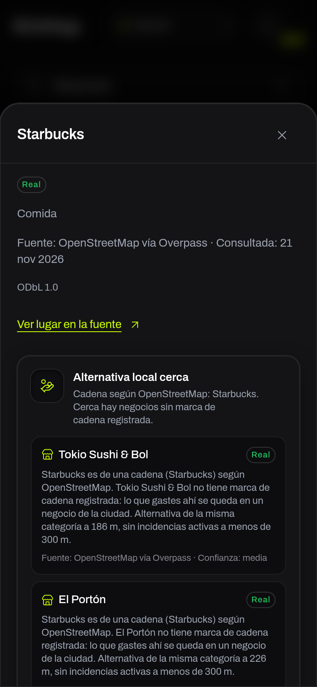
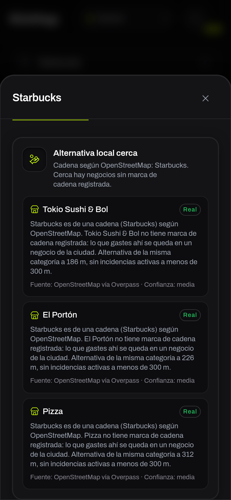
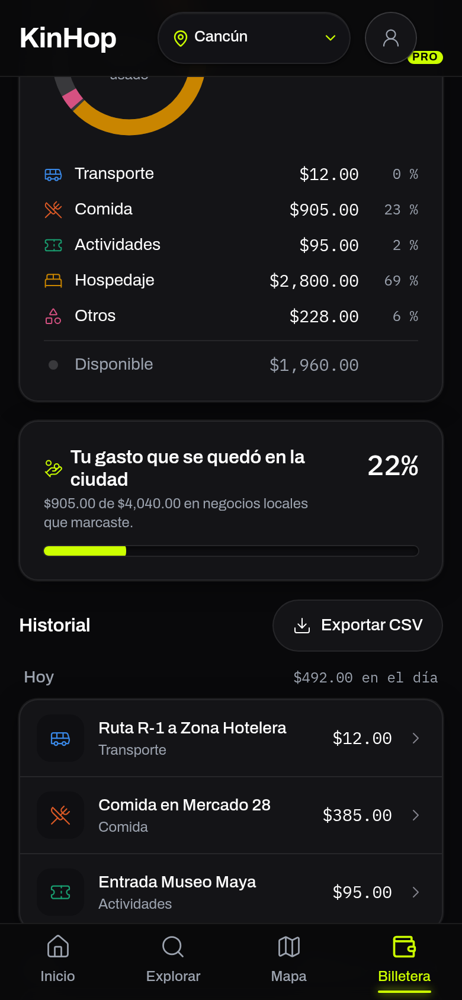
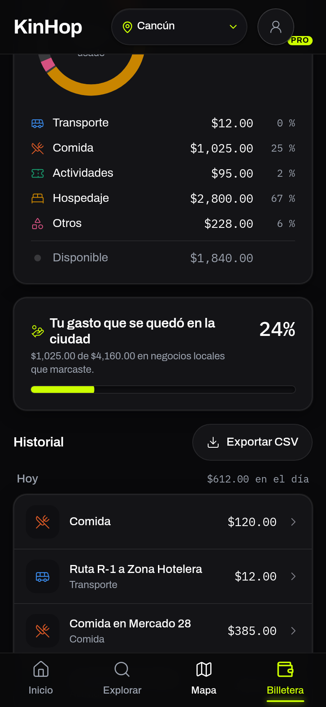
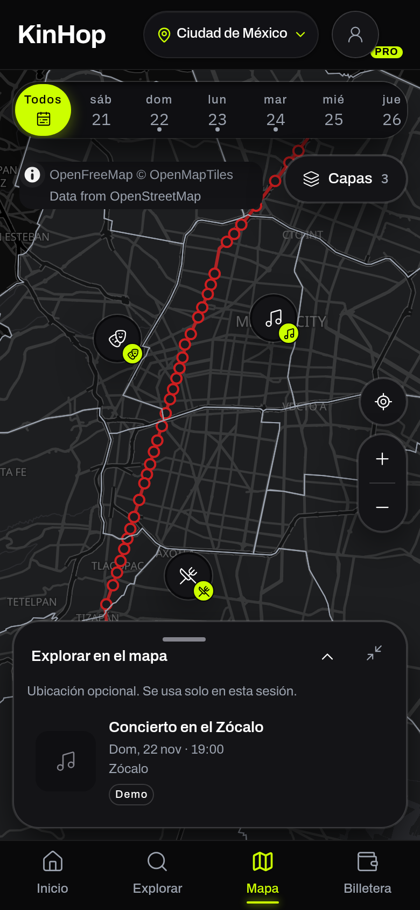
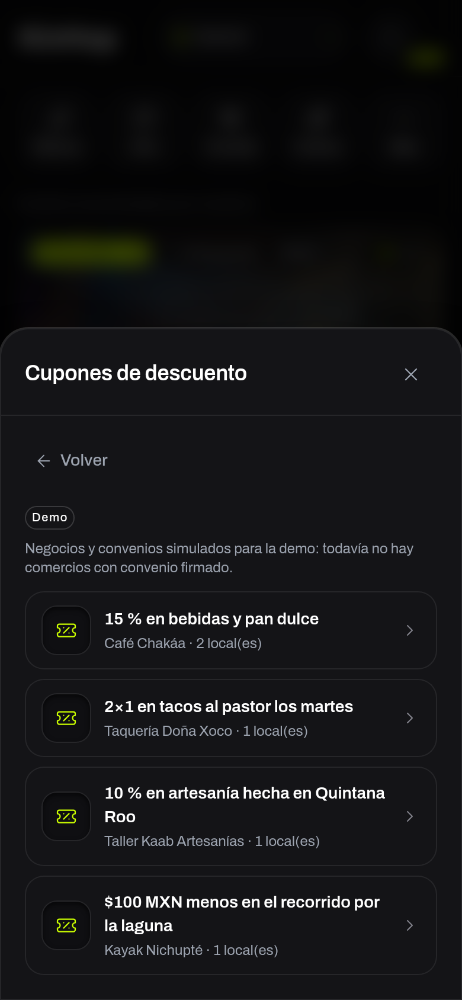
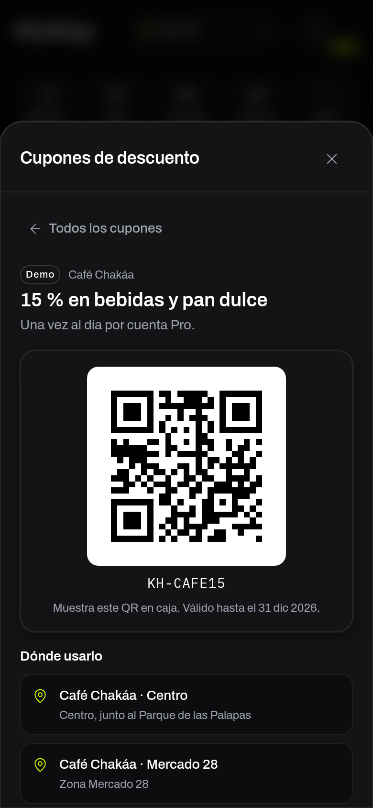

01 / 10 · La idea
KinHop.
Un salto hacia lo local.
KinHop conecta al visitante con opciones de la ciudad.
KinshipAfinidad · conexión
+HopUn salto hacia otro lugar
Turista que descubre ↔ negocio que se hace visible
01 / 10 · La idea
KinHop conecta al visitante con opciones de la ciudad.
Turista que descubre ↔ negocio que se hace visible
Kinship se usa como idea de afinidad y conexión; Hop evoca un salto.
02 / 10 · Para el turista
Lugares, eventos, mapa y presupuesto en una experiencia.
Capturas reales del prototipo · cuenta DEMO · 21/11/2026.
03 / 10 · La decisión que cambia
Starbucks → alternativas cercanas con una explicación.
No tener marca en OSM no demuestra propiedad local. Clasificación orientativa, confianza media.
04 / 10 · Billetera
Presupuesto e historial. El gasto local lo registra la persona.
Ejemplo: añadir $120 MXN y marcar «negocio local».
Manual · privado en el navegador · sin conectar tu banco
Indicador sobre gastos registrados por el usuario; no demuestra retención económica en la ciudad.
05 / 10 · Mapa
Un mapa de fondo completo, con lugares y transporte.
OSM / OpenFreeMap · © OpenStreetMap contributors. GTFS: fuente oficial de CDMX.
06 / 10 · Modelo de negocio
Dos propuestas de valor. Precios e interés por validar.
Modelo propuesto. Sin cobros reales: Stripe y AdMob pendientes. Cupones y patrocinios DEMO.
07 / 10 · Tecnología
Monolito modular: una API, responsabilidades separadas.
React · Vite · Tailwind
MapLibre · ES / EN
Node · Express · TypeScript
Google · sesión en servidor
Datos del servidor
SQL versionado
Esquema conceptual basado en la arquitectura del repositorio; no es una pantalla del producto.
08 / 10 · Otros estados
La adaptación ocurre en los datos, no rehaciendo la app.
Datos autorizados
Licencia + actualización
Normaliza y valida
Por módulo y ciudad
Misma API y web
Solo capas disponibles
Expandir exige fuentes, licencia, validación y adaptadores. No hay cobertura nacional desplegada.
09 / 10 · Metodología
Kanban + entregas funcionales + revisión por PR.
Criterios y datos
Un flujo completo
Pruebas + PR
Evidencia + docs
Alternativas abiertas → visitas por validar → disposición a pagar
Piloto, conversión y disposición a pagar: pendientes de validar. No se presentan ventas ni usuarios inventados.
10 / 10 · La oportunidad
KinHop · conectar al viajero con quienes hacen la ciudad.
Buscamos validar el piloto con turistas y comercios.
Una decisión mejor informada. Una oportunidad para el negocio local.
KinHop · prototipo demostrable · viabilidad comercial por validar.
















Kinship → conexión · Hop → salto
Descubrir · decidir · registrar
Cadena → alternativas → explicación
Registro manual · sin conectar el banco
Cancún DEMO · CDMX GTFS oficial
Valor para turista y negocio
Interfaz → API modular → datos
Fuente → adaptador → contrato común
Kanban · una entrega funcional cada vez
Descubrir → elegir → conectar